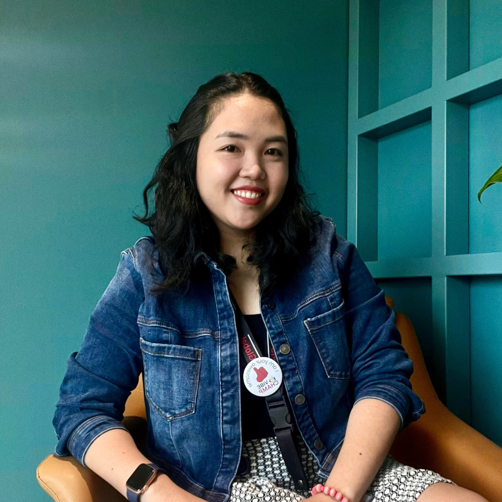

Most AI initiatives fail not because of the tools — but because of the human conditions around them. I design for exactly that: the culture, readiness, and organizational systems that determine whether AI takes root or gets abandoned.
BBy day, I lead enterprise-wide AI enablement for thousands of professionals at a global market intelligence firm. As a consultant, I partner with governments, NGOs, and development organizations across the Philippines. I believe sustainable AI is a design challenge, not a training problem; my approach integrates strategy, culture, and workflows to ensure technology actually takes root within a system.
My approach is built on one belief: sustainable AI adoption isn't a training problem. It's a whole-organization design challenge. I don't come in with a generic program and leave. I help institutions see the full picture first — the strategy, the people, the workflows, the culture — and then intervene where it actually matters.
I hold an ISO 42001 AI Management Systems Implementer certification, serve as a Certified ASEAN AI Master Trainer under the ASEAN Foundation, and sit on the Technology Committee of the Global Capability Center Council (GCCC) Philippines. Having upskilled 5,000+ professionals across the enterprise and public sectors alongside presenting strategic AI adoption frameworks to the President of the Philippines through the #AIReadyASEAN program, I apply this same systems thinking to every engagement.
This means I take on engagements selectively, work deeply rather than broadly, and stay accountable to outcomes long after the workshop ends.

A free, accessible introduction to AI delivered on behalf of ASEAN Foundation's #AIReadyASEAN program. Designed for educators, students, and communities who are curious about AI but don't know where to start.
Every session covers three things: what AI actually is, how humans and AI work best together, and where it can go wrong — with a live demo woven throughout.
Part of the ASEAN Foundation's regional Hour of AI program. I facilitate sessions for qualifying organizations in the Philippines.
→ Ideal for schools, community groups, LGUs, and public sector teamsHalf-day to multi-day programs that move teams from AI-anxious to AI-enabled. Built around your people, your workflows, and the organizational conditions that turn training into lasting behavioral change.
Available as standalone engagements or as part of a broader program.
→ Ideal for government agencies, NGOs, development organizations, and professional communitiesFor leadership teams who know AI matters but aren't sure where to start — or why previous efforts haven't stuck. A structured diagnostic engagement that delivers a clear, prioritized roadmap. Not a slide deck full of frameworks. A practical plan your team can actually act on.
I take a limited number of advisory engagements. If you're considering this, reach out early.
→ Ideal for government agencies, NGO leadership, and foundations planning an AI initiativeActivate your organization's internal AI momentum through facilitated hackathons, use case development sprints, and AI council design. Each engagement produces a concrete output your team owns and operates independently from day one.
Helping organizations establish the frameworks, policies, and accountability structures needed to use AI responsibly. Grounded in ISO 42001 and designed for institutions where governance isn't optional.
A cross-sector portfolio spanning national government, education, development, and professional communities across the Philippines and ASEAN.
A 3-day national training program equipping 800+ government professionals with practical AI skills and frameworks for staying relevant in an AI-augmented public sector. Participants explored how AI reshapes roles, workflows, and decision-making across government functions.
Read moreA paid 2-day advanced training for DICT Bislig moving participants from AI awareness to hands-on application — covering Microsoft Copilot, Google AI Studio, and how to deploy personal productivity automations in real government workflows.
Read moreA nationwide series of sessions for DepEd educators on embedding AI meaningfully into classroom practice — moving beyond novelty toward genuine pedagogical transformation. The program culminated in an Hour of AI presentation to the President of the Philippines.
Read moreAn upcoming multi-day workshop for government professionals in Palawan, bridging AI tools with knowledge and records management — helping participants apply intelligent automation to the documentation challenges most institutions deprioritize but every organization needs to solve.
A focused session for senior members of the WIN Women Inter Industry Network on building AI readiness at the leadership level — covering strategic AI literacy, human and AI collaboration, and how leaders can model confident, responsible AI adoption for their teams.
Read moreA hands-on workshop for a marketing agency team covering practical AI tools for content creation, campaign ideation, and client productivity — with prompt engineering as the core skill. Participants left with a working prompt library tailored to their specific client work.
Read moreAdditional engagements are kept confidential at the client's request. Full case studies and references are available upon request for qualified inquiries.
I work best with institutions where AI adoption is a matter of public impact — not just productivity. If your work touches communities, policy, or human development, we're probably a good fit.
From national agencies navigating digitalization mandates to provincial units building capacity from the ground up. I help public servants understand AI practically — and use it responsibly.
Mission-driven organizations applying AI to amplify their development work. If you're thinking about how AI fits into your programs, your data, or your team — that's exactly where I start.
Regional bodies and funding institutions investing in AI literacy and governance capacity across ASEAN. I bring both the enablement and the governance perspective to these engagements.
Educators and institutional leaders embedding AI literacy into curriculum and organizational culture — not as a trend, but as a durable competency.